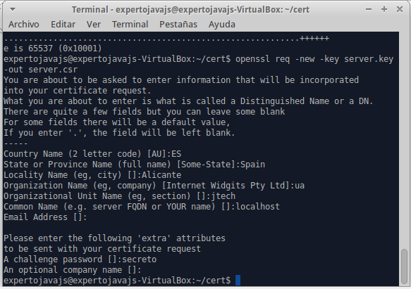

Servidores Web y PaaS
Sesión 4: Certificados digitales y SSL
Índice
- Certificados digitales.
- Handshake SSL.
- One-Way SSL y Two-Way SSL.
- Autorización basada en certificados.
- Comunicación SSL a través de proxies.
» Certificados digitales
Certificados digitales
- Junto con los passwords, es uno de los mecanismos de autenticación más populares.
- Derivado de la criptografía asimétrica con dos claves, una privada y otra pública.
- Dos supuestos:
- Emisor encripta un mensaje con clave pública y el receptor lo desencripta con clave privada → Se garantiza la confidencialidad del mensaje.
- Emisor encripta un mensaje con clave privada y el receptor lo desencripta con clave pública → Se garantiza la identidad del emisor (fundamento de la firma digital).
Certificados digitales
- Un certificado es un documento con información sobre la identidad de un individuo o empresa y una clave pública asociada al mismo.
- Existen varios formatos, el más habitual X.509.
- Para que tenga validez, debe ir firmado con por alguien de confianza: autoridades de certificación (CA).
- Estas entidades también acreditan su identidad con certificados digitales. La secuencia anidada se denomina chain of trust… ¿sin final?
- Los certificados autofirmados o raíz resuelven el problema, pero son el eslabón más débil. Normalmente vienen preinstalados o se obtienen de forma presencial.
» Handshake SSL
SSL - Secure Socket Layer
- Protocolo que permite la confidencialidad y autenticación en Internet.
- Funciona como una capa adicional, se puede combinar con múltiples protocolos que operen en la capa de aplicación de TCP/IP: HTTP, FTP, TELNET.
- Se utiliza un puerto de escucha específico para SSL (estándar 443, por defecto en WildFly 8443).
- Para establecer una comunicación segura, cliente y servidor entablan un diálogo denominado handshake.
Handshake (I)
El cliente solicita al servidor un recurso mediante conexión segura SSL. Envía una lista de los algoritmos de encriptación que soporta
Handshake (II)
El servidor se identifica mediante un certificado, e informa del algoritmo de encriptación más potente que pueden usar ambos.
Handshake (III)
El cliente comprueba que el certificado sea de un sitio de confianza y genera una clave de sesión, encriptada con la clave pública del certificado del servidor.
Handshake (IV)
Cliente y servidor ya conocen la nueva clave simétrica. Se envían mutuamente la clave de sesión y comprueban que coincida con su copia.

» One-Way SSL y Two-Way SSL
- El diálogo anterior permite que el cliente verifique que el servidor es quien dice ser → Verificación en un sentido.
- Adicionalmente es posible que el servidor solicite al cliente que se identifique mediante un certificado digital.
- Si existe confianza mutua, se establece el canal de comunicación seguro → Verificación en los dos sentidos.
A continuación veremos cómo activar ambas modalidades de SSL en WildFly.
Instalación de OpenSSL
sudo apt-get install openssl
Cambio para permitir firmar certificados
/usr/lib/ssl/openssl.conf Línea 170
basicConstraints=CA:TRUE # Antes FALSE
- Utilizaremos keytool para trabajar con almacenes de certificados JKS.
- Con OpenSSL crearemos certificados y firmaremos como una CA.
- Cada certificado se almacenará con un alias para poderlo recuperar del almacén.
Creación de una CA ficticia
1. Definir un certificado de CA ficticia:
openssl req -x509 -newkey rsa:2048 -keyout selfkey.pem -out selfcert.pem -days 365

Creación de una CA ficticia
2. Importar el certificado en el almacén de confianza trust.jks :
keytool -import -trustcacerts -alias trustself -keystore trust.jks -file selfcert.pem -keyalg RSA -keypass secreto -storepass secreto
One Way SSL
1.- Crear una petición de certificado que identifique al servidor:
openssl genrsa -out server.key 1024 #crear una clave nueva de certificado
openssl req -new -key server.key -out server.csr #crear una petición de certificado.

One Way SSL
2.- Firmar el certificado con nuestra CA
- Simulamos lo que haría una CA al recibir una petición de certificado
openssl x509 -req -days 365 -in server.csr -CA selfcert.pem -CAkey selfkey.pem -set_serial 01 -out server.crt - El serial debe ser distinto para cada certificado generado (!).
One Way SSL
3.- Importar el certificado en nuestro almacén de identidad
- Transformación previa a PCKS12:
# Convertir a PKCS12 openssl pkcs12 -export -name servercert -in server.crt -inkey server.key -out keystore.p12 #finalmente importarlo en jks keytool -importkeystore -destkeystore identity.jks -srckeystore keystore.p12 \ -srcstoretype pkcs12 -alias servercert -keypass secreto -storepass secreto
One Way SSL
4.- Comprobar que los certificados están importados correctamente:
keytool -list -v -keystore trust.jks -storepass secreto
keytool -list -v -keystore identity.jks -storepass secreto
5.- Copiar los almacenes a la carpeta standalone/configuration
6.- Definir el realm asociado a los certificados:
<keystore path="identity.jks" relative-to="jboss.server.config.dir" keystore-password="secreto" alias="servercert" key-password="secreto"/>
One Way SSL
7.- Definir un https-listener en el subsistema undertow :
<buffer-cache name="default"/>
<http-listener name="default" socket-binding="http"/>
<https-listener name="https" socket-binding="https" security-realm="SecureRealm"/>
Aplica a las peticiones https y management-https.
One Way SSL
8.-Arrancar el servidor
Ya deberíamos tener SSL pero...

El navegador avisa de que no confía en nuestro certificado de servidor.
One Way SSL
Solución: Añadir nuestra CA a las CA de confianza del navegador

Importaremos el certificado selfcert.pem
One Way SSL
It works!
Cambios en las aplicaciones web
Proteger una serie de recursos mediante conexión segura:
Redireccion SSL
/*
CONFIDENTIAL
Forzar acceso seguro a la consola web
- Añadir el certificado de servidor al ManagementRealm
<keystore path="identity.jks" relative-to="jboss.server.config.dir" keystore-password="secreto" alias="servercert" key-password="secreto"/> - Asociar el puerto seguro a la interfaz de administración:
<socket-binding https="management-https"/>
Two-Way SSL
1.- Crear un certificado de cliente, firmado por nuestra CA ficticia:
openssl genrsa -out client.key 1024
openssl req -new -key client.key -out client.csr
openssl x509 -req -days 365 -in client.csr -CA selfcert.pem -set_serial 02 -CAkey selfkey.pem -out client.crt

Two-Way SSL
2.- Convertir al formato PKCS12 que incluye clave pública y privada:
openssl pkcs12 -export -name clientcert -in client.crt -inkey client.key -out clientstore.p12
3.- Importar el certificado como certificado propio:

Two-Way SSL
4.- Configurar autenticación en SecureRealm:
....
<truststore path="trust.jks" relative-to="jboss.server.config.dir" keystore-password="secreto"/>
5.- Requerir certificado de cliente:
El parámetro verify-client tiene tres valores posibles:
| Valor | Descripción |
|---|---|
| NOT_REQUESTED | No solicitar certificado a cliente (valor por defecto) |
| REQUESTED | Se pide certificado de cliente, pero si no se presenta se permite continuar la conexión segura. |
| REQUIRED | Se requiere un certificado de cliente válido para poder establecer una conexión segura. |
» Autorización basada en certificados.
Login module CertificateRoles
<module-option name="securityDomain" value="seguridad-cert"/>
<module-option name="verifier" value="org.jboss.security.auth.certs.AnyCertVerifier"/>
<module-option name="rolesProperties" value="file:/usr/local/wildfly-8.1.0.Final/standalone/configuration/roles.properties"/>
<module-option name="defaultRolesProperties" value="file:/usr/local/wildfly-8.1.0.Final/standalone/configuration/defaultroles.properties"/>
<jsse keystore-password="secreto" keystore-url="file:/usr/local/wildfly-8.1.0.Final/standalone/configuration/trust.jks"
truststore-password="secreto" truststore-url="file:/usr/local/wildfly-8.1.0.Final/standalone/configuration/trust.jks"/>
- rolesProperties: Fichero que asocia los (CN) con roles.
- jsse: Almacén de confianza.
<module-option name="securityDomain" value="seguridad-cert"/>
<module-option name="verifier" value="org.jboss.security.auth.certs.AnyCertVerifier"/>
<module-option name="rolesProperties" value="file:/usr/local/wildfly-8.1.0.Final/standalone/configuration/roles.properties"/>
<module-option name="defaultRolesProperties" value="file:/usr/local/wildfly-8.1.0.Final/standalone/configuration/defaultroles.properties"/>
<jsse keystore-password="secreto" keystore-url="file:/usr/local/wildfly-8.1.0.Final/standalone/configuration/trust.jks"
truststore-password="secreto" truststore-url="file:/usr/local/wildfly-8.1.0.Final/standalone/configuration/trust.jks"/>
Asociar Certificados a roles
- El fichero de roles sigue el mismo formato general que el fichero application-roles.properties.
- Cada usuario se identifica con el DN completo del certificado.
- Los signos '=' se escapan con barras.
- Ejemplo:
CN\=JoseLuis,\ OU\=jtech,\ O\=UA,\ L\=Alicante,\ ST\=Spain,\ C\=ES=rol_usuario - Ojo con el último '=', separador entre usuario y rol o roles (!)
Cambios en las aplicaciones Web
- Autenticación basada en certificados:
CLIENT-CERT miDominio
Comunicación SSL a través de proxies

- Las conexiones SSL son punto a punto.
- Elementos SW/HW intermedios: proxies, balanceadores.
- Cabecera SSL_CLIENT_CERT